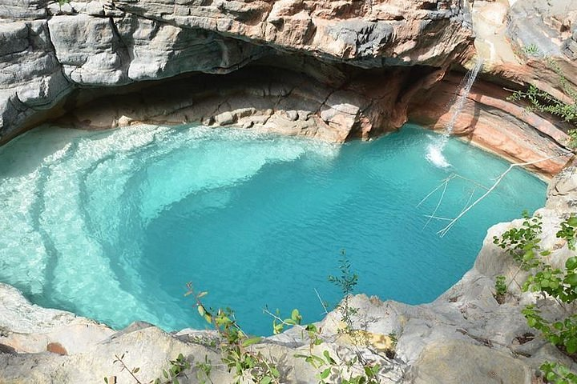
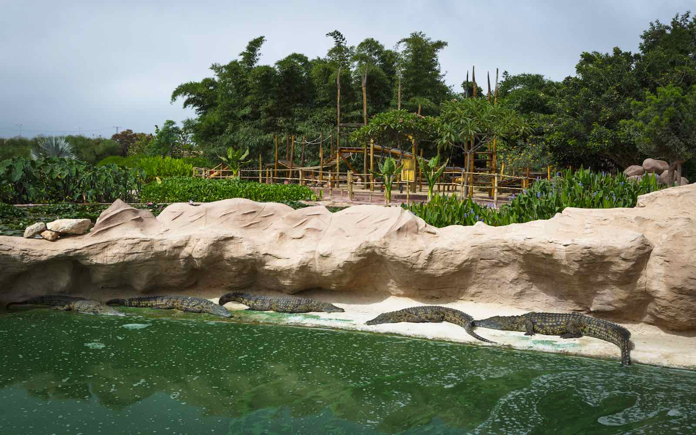

Visitez une de nos provinces
La région de Souss-Massa est la première station balnéaire du Maroc, elle est connue pour ses belles plages et les innombrables activités nautiques qu’elle offre à ses visiteurs mais cette région propose également une richesse culturelle et patrimoniale abondante.

Paradise valley
Agadir Ida-OutananeL’arrière-pays d’Agadir s’étend sur les contreforts du Haut-Atlas Occidental, et se distingue par la beauté de ses paysages escarpés. Dans cet enchaînement montagneux, un lieu se démarque particulièrement : La Paradise Valley. Le long d’un canyon riverain parsemé de bassins rocheux, une petite palmeraie se blottit au milieu de parois calcaires abruptes, tel un petit bout de paradis. Tout autour, des sentiers en labyrinthes parcourent la région, et mènent vers une escapade naturelle parfumée de lavande et de thym.
- Guide local
- 32 km depuis Agadir
- 250 MAD

Crocoparc
Agadir Ida-OutananeCrocoparc est un parc d’attractions avec plus de 300 crocodiles, ainsi que des lézards, tortues géantes, et autres reptiles.
- Espace touristique
- https://www.crocoparc.com/
- 80 MAD

Visite à la source bleue de Tiznit
TiznitLa ville de Tiznit tire son nom de Lalla Zninia. Celle d’une ancienne pécheresse qui, repentie, devint une sainte femme. D’après cette légende, « Lalla Zninia » revenait du Nord et s’est arrêtée épuisée en ce lieu alors désertique. Elle déplora sa conduite passée avec tant de sincérité et fit preuve d’un tel repentir que Dieu, pour lui manifester son pardon, fit jaillir à ses pieds une source.
- Espace touristique
- Tiznit 85000
- 3,19 Euro

Kasbah Tizourgane
à 40Km d’Ait BahaAu pays d’Ida Ougnidif, la Kasbah de Tizourgane siège sur un piton rocheux, telle une reine sur un trône de granite. Œuvre architecturale séculaire, la citadelle séduit par sa beauté ainsi que par la charge historique qui en émane. Son importance est telle qu’elle est inscrite patrimoine historique national depuis 1995.
- Espace touristique
- 0,5 km du centre de Touchant
- Free

Tissint, L'oasis de sel
TataVéritable exception verdoyante dans un environnement lunaire, l’oasis et ses environs recèlent maintes attractions à découvrir : architecture ancestrale, merveilles naturelles, culture authentique, paysages époustouflants, bivouacs exceptionnels… Des atouts qui font de Tissint une halte incontournable lors de votre séjour à Tata , surtout que les lieux sont facilement accessibles par la route nationale.
- Espace touristique
- A mi-chemin entre Tata et Foum Zguid
- Free

Les Rochers Peints
TafraoutUn immense plateau de granite rose s’étend au sud de Tafraout, et forme des reliefs et des collines qui tranchent avec le cadre montagneux . Au milieu de ce décor martien, des rochers se distinguent par leur originalité et leur ampleur. L’un se dresse fièrement au milieu d’un village séculaire, et les autres sont une œuvre d’art hors du commun. Il s’agit évidemment des Rochers Peints et du Rocher Agadir N’Tfraout.
- Espace touristique
- Tafraout
- Free